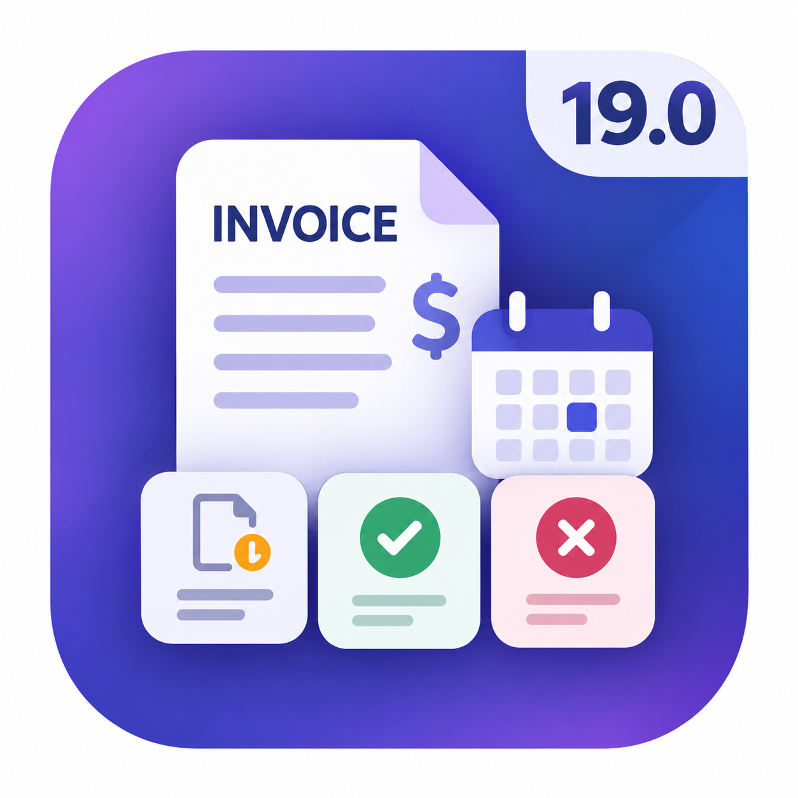

ODOO 19 · ACCOUNTING / INVOICING Invoice Status Dashboard |  |
01 / THE IDEA
A small toolbar. A clearer invoice list.
The module places three status-count buttons and a calendar selector immediately before the standard search bar. It enhances the invoice list rather than replacing it.
SKETCHED PREVIEW — illustrative counts and records, not a live screenshot
| Number | Customer | Invoice date | Status |
|---|---|---|---|
| INV / Example 01 | Example customer A | Selected period | Posted |
| Draft invoice | Example customer B | Selected period | Draft |
| INV / Example 02 | Example customer C | Selected period | Cancelled |
↑ Status counts + date selector + your existing search, together.
02 / HOW IT WORKS
From all invoices to the right invoices.
Open invoice list → Choose dates → Click a status → Review matching invoices
The sequence is flexible: dates and statuses work together with your existing search criteria.
- Open the invoice list. Go to Accounting / Invoicing → Customers → Invoices and use list view. Standard vendor invoice variants inheriting the same list are supported too.
- Set your invoice-date period. Use the calendar selector: Today, This Week, This Month, This Year, or Custom Range. The initial scope is All Dates.
- Choose Draft, Posted, or Cancelled. Click a count button to add that status filter. Click the same button again to remove it. Only one toolbar-owned status is active at a time.
- Continue working normally. Search, group, paginate, select records, and use the existing accounting and upload controls.
03 / SMART DATES
Choose a period, not a complicated search.
| Option | Invoice-date scope |
|---|---|
| Today | The current calendar date only. |
| This Week | The configured start of the week through today. |
| This Month | The first day of the current month through today. |
| This Year | The first day of the current year through today. |
| Custom Range | Choose both Start Date and End Date, then Apply. |
[ Start Date ] → [ End Date ] → Apply / Cancel / Clear
Both boundaries are inclusive. Start Date must not be later than End Date. Remove the date facet in the search bar to clear a predefined period; Custom Range also provides Clear.
Dates filter invoice_date, not due date. Finite periods exclude records without an invoice date. Week start follows Odoo language settings; today's date follows the effective user/search timezone.
04 / UNDERSTANDING COUNTS
Counts respect your search.
The counts include the current date period and other search criteria, but exclude only the toolbar's own status selection. This keeps the three status totals useful while you switch between them.
Important: a separate Posted filter from the standard search bar remains active. Draft and Cancelled counts can then be zero; clicking Draft intersects with that existing Posted filter rather than removing it. Saved favorites also retain their own conditions.
Counts refresh with search/context and visible-row changes. Changes made by other users require a list reload. If counts fail to load, the toolbar shows an em dash and Retry; invoice search remains available.
05 / INSTALL & SCOPE
Fits into your existing accounting workflow.
- Place the module in a configured custom-addons directory and restart your usual Odoo server.
- As an administrator, enable developer mode and update the Apps list.
- Remove the Apps-only filter, then find Invoice Status Dashboard & Smart Dates and install it. This enhancement is not marked as a standalone application.
- Open the invoice list. After module updates, upgrade the module and refresh the browser.
Dependencies: Accounting (account) and Web (web). Version: Odoo 19. License: LGPL-3.
Existing read permissions and record rules are respected. The dashboard does not write invoices, add stored business fields, or broaden the invoice action's domain.
Journal-entry actions and embedded dialog lists are excluded. Custom actions need an appropriate invoice-type context. Add-ons replacing the same invoice list controller require integration. This description is based on the module source, not a claim of live-database validation. Test installation and browser behavior on a disposable database before production.